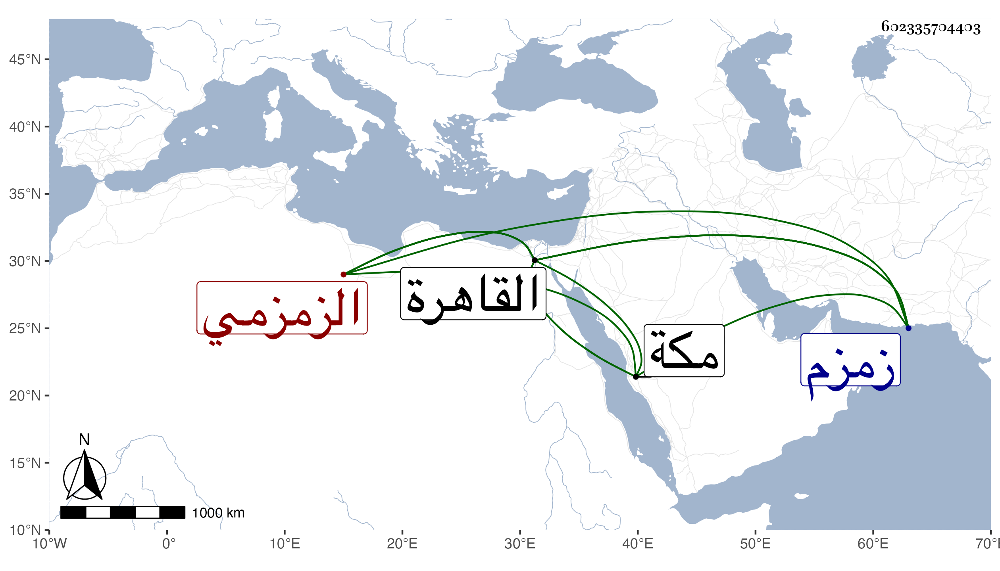

0902Sakhawi.DawLamic.ITO20230111-ara1.EIS1600.602335704403
Biography ID: 602335704403
الزمزمي بفتح المعجمتين نسبة لبئر زمزم إبراهيم وأحمد واسمعيل وحسين ومحمد وعائشة بنو علي بن محمد بن داود وأمهم ابنة أحمد بن سالم بن ياقوت ويقال اسمها مريم فإبرهيم لم يعقب بل لم يتزوج وأحمد له سلامة وحسين له وأما اسماعيل فله محمد وأبو الفتح ونابت وداود فلمحمد علي ولعلي ابنة ولأبي الفتح محمد ثم أحمد ولنابت اسماعيل ثم حسن ثم أبو القسم وممن انتسب كذلك لانتمائه لهم من جهة النساء عبد السلام بن موسى بن أبي بكر بن أكبر الشيرازي الأصل قدم أبوه فتزوج عائشة ابنة علي فاستولدها عبد السلام ولعبد السلام من سلامة ابنة خاله أحمد المذكور أم الأمان وأم هانئ وأم الحسين وعائشة ومحمد وعبد العزيز وموسى ثم لعبد العزيز الجمال محمد أحد الآخذين عني والمتوفي بالقاهرة بالطاعون وكذا أبو بكر مات بعده بالقاهرة أيضا وكلاهما في حياة أبويهما وتأخر بعد والدهما عمر المتوفي بمكة سنة ست وتسعين وعلي وعثمان وكان ثانيهما بالقاهرة ثم رجع في أثناء سنة سبع وتسعين ومعه مرسوم الخليفة وغيره بالاشتراك مع أقربائهم من جهة أمهم في القبة والبئر ثم بطل ثم رجع .
